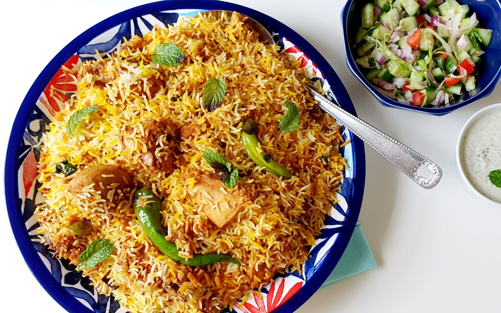

to create Hyderabadi cuisine.92 Local folklore attributes the creation of Hyderabadi biryani to
the chef of the first Nizam, Nizam-ul-Mulk, Asaf Jah I, in the mid-18th century, during a hunting expedition.
In 1857, when the Mughal Empire declined in Delhi, Hyderabad emerged as the center of South Asian culture,
resulting in a mix of innovations in Hyderabadi biryani. 

Ingredients for Hyderbadi Biryani
1}Chicken or Mutton: 500 grams, cut into pieces
2}Yogurt (Curd): 1 cup
3}Ginger-Garlic Paste: 2 tablespoons
4}RedChili Powder: 1 teaspoon
5}Turmeric Powder: 1/2 teaspoon
6}Garam Masala Powder: 1 teaspoon
7}Coriander Powder: 1 teaspoon
8}Cumin Powder: 1 teaspoon
9}Green Chilies: 2-3, slit
10}Mint Leaves: 1/2 cup, chopped
11}Coriander Leaves: 1/2 cup, chopped
12}Lemon Juice: 2 tablespoons
13}Fried Onions: 1/2 cup (thinly sliced onions fried until golden brown)
14}Salt: to taste
15}Oil or Ghee: 2 tablespoons
-For Cooking the Rice:
1}Basmati Rice: 2 cups (soaked in water for 30 minutes)
2}Water: 8 cups (for boiling rice)
3}Bay Leaves: 2
4}Green Cardamom Pods: 4
5}Cloves: 4
6}Cinnamon Stick: 1 inch
7}Shahi Jeera (Caraway Seeds): 1/2 teaspoon
8}Salt: to taste
-For Assembling the Biryani:
1}Saffron: a pinch (soaked in 2 tablespoons warm milk)
2}Ghee: 2 tablespoons
3}Fried Onions: 1/4 cup (for layering and garnish)
4}Mint Leaves: a handful (for garnish)
5}Coriander Leaves: a handful (for garnish)
Preparation Steps:
-Marinating the Meat:
1}In a large bowl, combine the chicken or mutton with yogurt, ginger-garlic paste, red chili powder, turmeric powder, garam masala powder, coriander powder, cumin powder, slit green chilies, chopped mint leaves, chopped coriander leaves, lemon juice, fried onions, salt, and oil or ghee.
2}Mix well to coat the meat evenly with the marinade.
3}Cover and refrigerate for at least 2 hours, preferably overnight
-Cooking the Rice:
1}In a large pot, bring 8 cups of water to a boil.
2}Add bay leaves, green cardamom pods, cloves, cinnamon stick, shahi jeera, and salt to the boiling water.
3}Add the soaked and drained basmati rice to the pot and cook until the rice is 70% cooked (it should still have a slight bite to it). This usually takes about 5-6 minutes.
4}Drain the rice and set aside.
-Assembling the Biryani::
1}In a heavy-bottomed pot or a biryani pot, add a layer of marinated meat at the bottom.
2}Add a layer of the partially cooked rice over the meat.
3}Drizzle half of the saffron milk over the rice.
4}Add some fried onions, mint leaves, and coriander leaves on top.
5}Repeat the layers with the remaining meat and rice, finishing with a layer of rice on top.
6}Drizzle the remaining saffron milk and ghee over the top layer of rice.
7]Garnish with the remaining fried onions, mint leaves, and coriander leaves.
-Dum Cooking (Steaming):
1}Seal the pot with a tight-fitting lid. You can also seal the edges with dough to ensure no steam escapes.
2}Place the pot on low heat and cook for about 30-40 minutes, allowing the flavors to meld together and the meat to cook through.
3}Alternatively, you can cook the biryani in an oven preheated to 180°C (350°F) for 30-40 minutes.
-Serving:
1}Once cooked, gently fluff the biryani with a fork to mix the layers.
2}Serve hot with raita, salan (a spicy gravy), and salad.